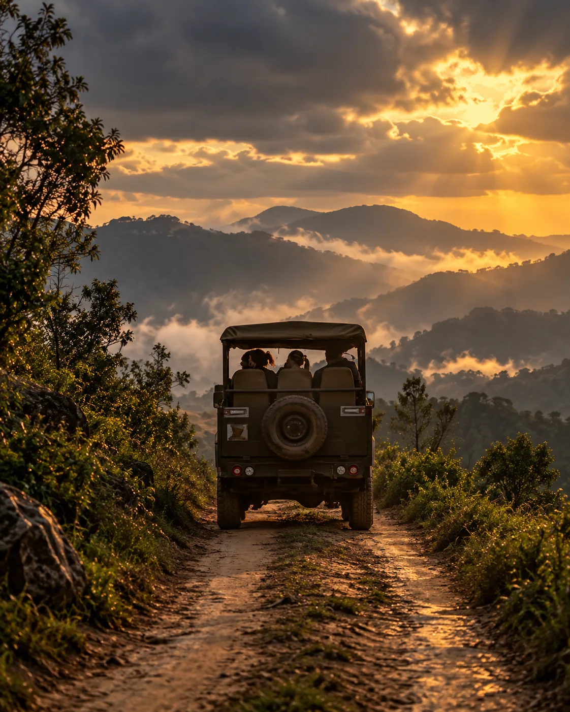
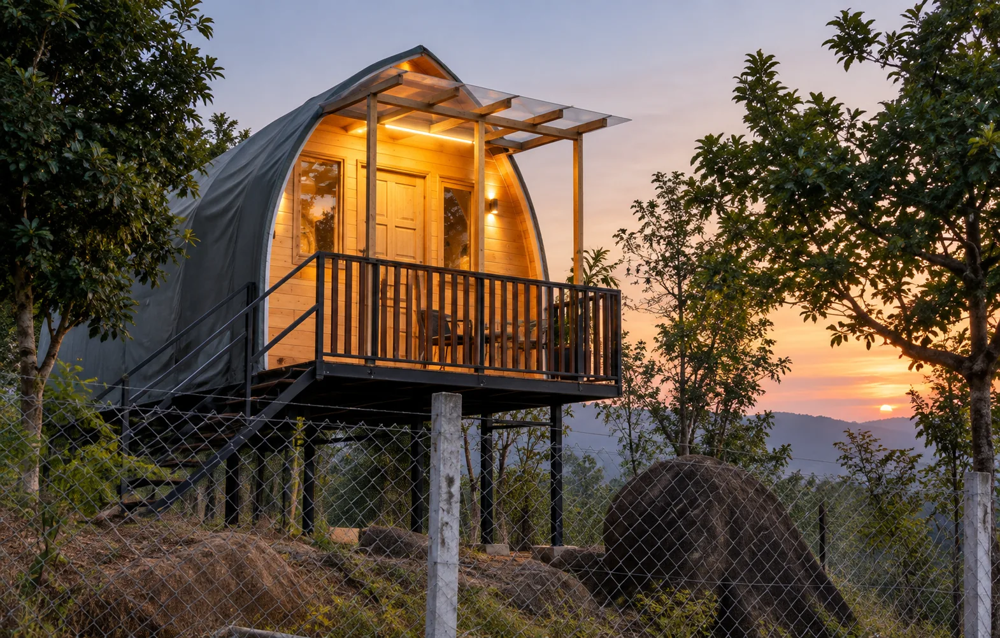

Kodaikanal · Picnic Tour
Kodaikanal Picnic Tour
A relaxed day by Kodaikanal Lake, with waterfalls, cliffside viewpoints and a botanical garden — a private cab route for families, couples and groups.
Pick the loop length that fits your schedule
One dedicated vehicle for the whole loop
Lake, falls, viewpoints and a botanical garden
Personalised pricing back within hours
The Tour
Everything You Need for a Picnic Day
This tour bundles a relaxed lakeside day with a handful of waterfall and viewpoint stops into one booking.
Private Transportation
A dedicated cab for the full picnic loop — no sharing with strangers.
Lake Time
Extended time at Kodaikanal Lake for boating and a relaxed break.
Ten Stops
A church, an ancient tree, two waterfalls, two viewpoints, a cave, a park and the lake.
Flexible Timing
Half-day or full-day loop, paced to your group's pickup time.
Parking & Tolls
Applicable parking, toll and driver charges included as per tour terms.
Local Coordination
One point of contact for the route and pickup — not a shared shuttle.
The Route
Picnic Tour Route
A relaxed loop anchored by Kodaikanal Lake, with waterfalls, viewpoints and a botanical garden along the way.
Picnic Loop · Lake, Falls & Viewpoints
10 StopsPickup & La Saleth Church
Pickup from your hotel, then a stop at La Saleth Church on the way out.
500-Year-Old Tree & Lion Cave
A heritage tree stop, followed by a short walk to Lion Cave.
Vattakanal Falls & Mountain View
A forest waterfall stop with an open mountain viewpoint nearby.
Dolphin's Nose & Echo Rock
A narrow cliffside outcrop and a nearby echo point.
Bear Shola Falls
A quieter, tree-lined waterfall stop before heading back toward town.
Bryant Park
A relaxed walk through the botanical garden beside the lake.
Kodaikanal Lake
Boating and lakeside time — the anchor stop of the picnic day.
Drop-off
Return to your pickup point, or continue on the full-day route.
The exact route and stop order are confirmed against travel time, weather and viewpoint conditions on the day.
Destinations
Places Covered on This Tour
Kodaikanal Lake anchors the loop, with waterfalls, viewpoints and a botanical garden built around it.
Kodaikanal Lake — boating and lakeside time, the anchor stop of the route.

Vattakanal & Bear Shola Falls Bryant Park
Bryant Park
 La Saleth Church & Lion Cave
La Saleth Church & Lion Cave
Tour Package Rates
Kodaikanal Picnic Tour Rates
Per-vehicle rates for the picnic loop — final pricing is confirmed against travel dates, season and availability.
Rates are per vehicle for the picnic loop, covering driver and fuel for the route. Confirm exact inclusions and current availability on WhatsApp.
Good to Know
What's Not Included
Exact inclusions and exclusions may vary by selected tour option.
Booking
How Booking Works
Four simple steps, and none of them involve waiting days for a callback.
Choose Half or Full Day
Pick the loop length that fits your schedule.
Share Your Details
Travel date, number of guests and pickup location.
Confirm the Cab
We check availability and confirm pricing.
Enjoy the Picnic Day
Pickup, ten stops and a comfortable drop-off.
Questions
Frequently Asked Questions
Route
La Saleth Church, a 500-year-old tree, Vattakanal Falls, Lion Cave, Dolphin's Nose, Echo Rock, Bear Shola Falls, Bryant Park and Kodaikanal Lake.
Yes — the half-day loop covers the closer stops around the lake; the full-day route adds the rest.
Logistics
Yes, the tour is built around private cab travel. Confirm vehicle type and capacity while booking.
Boating tickets are generally excluded unless specifically stated in the confirmed tour.
Booking
We check real availability and usually send pricing within a few hours of your enquiry.
Yes — see the full range of featured tours and ready-made packages on the Travels in Kodaikanal hub page.

Plan Your Kodaikanal Picnic Day
Lake, falls, viewpoints and a botanical garden — one private cab, one simple booking.